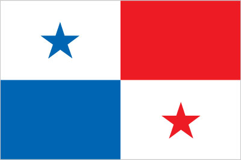

Central America and Caribbean :: PANAMA
Introduction :: PANAMA
-
Explored and settled by the Spanish in the 16th century, Panama broke with Spain in 1821 and joined a union of Colombia, Ecuador, and Venezuela - named the Republic of Gran Colombia. When the latter dissolved in 1830, Panama remained part of Colombia. With US backing, Panama seceded from Colombia in 1903 and promptly signed a treaty with the US allowing for the construction of a canal and US sovereignty over a strip of land on either side of the structure (the Panama Canal Zone). The Panama Canal was built by the US Army Corps of Engineers between 1904 and 1914. In 1977, an agreement was signed for the complete transfer of the Canal from the US to Panama by the end of the century. Certain portions of the Zone and increasing responsibility over the Canal were turned over in the subsequent decades. With US help, dictator Manuel NORIEGA was deposed in 1989. The entire Panama Canal, the area supporting the Canal, and remaining US military bases were transferred to Panama by the end of 1999. An ambitious expansion project to more than double the Canal's capacity - by allowing for more Canal transits and larger ships - was carried out between 2007 and 2016.
Geography :: PANAMA
-
Central America, bordering both the Caribbean Sea and the North Pacific Ocean, between Colombia and Costa Rica9 00 N, 80 00 WCentral America and the Caribbeantotal: 75,420 sq kmland: 74,340 sq kmwater: 1,080 sq kmcountry comparison to the world: 119slightly smaller than South Carolinatotal: 687 kmborder countries (2): Colombia 339 km, Costa Rica 348 km2,490 kmterritorial sea: 12 nmcontiguous zone: 24 nmexclusive economic zone: 200 nm or edge of continental margintropical maritime; hot, humid, cloudy; prolonged rainy season (May to January), short dry season (January to May)interior mostly steep, rugged mountains with dissected, upland plains; coastal plains with rolling hillsmean elevation: 360 melevation extremes: lowest point: Pacific Ocean 0 mhighest point: Volcan Baru 3,475 mcopper, mahogany forests, shrimp, hydropoweragricultural land: 30.5%arable land 7.3%; permanent crops 2.5%; permanent pasture 20.7%forest: 43.6%other: 25.9% (2011 est.)321 sq km (2012)population is concentrated towards the center of the country, particularly around the Canal, but a sizeable segment of the populace also lives in the far west around David; the eastern third of the country is sparsely inhabitedoccasional severe storms and forest fires in the Darien areawater pollution from agricultural runoff threatens fishery resources; deforestation of tropical rain forest; land degradation and soil erosion threatens siltation of Panama Canal; air pollution in urban areas; mining threatens natural resourcesparty to: Biodiversity, Climate Change, Climate Change-Kyoto Protocol, Desertification, Endangered Species, Environmental Modification, Hazardous Wastes, Law of the Sea, Marine Dumping, Ozone Layer Protection, Ship Pollution, Tropical Timber 83, Tropical Timber 94, Wetlands, Whalingsigned, but not ratified: Marine Life Conservationstrategic location on eastern end of isthmus forming land bridge connecting North and South America; controls Panama Canal that links North Atlantic Ocean via Caribbean Sea with North Pacific Ocean
People and Society :: PANAMA
-
3,753,142 (July 2017 est.)country comparison to the world: 130noun: Panamanian(s)adjective: Panamanianmestizo (mixed Amerindian and white) 65%, Native American 12.3% (Ngabe 7.6%, Kuna 2.4%, Embera 0.9%, Bugle 0.8%, other 0.4%, unspecified 0.2%), black or African descent 9.2%, mulatto 6.8%, white 6.7% (2010 est.)Spanish (official), indigenous languages (including Ngabere (or Guaymi), Buglere, Kuna, Embera, Wounaan, Naso (or Teribe), and Bri Bri), Panamanian English Creole (similar to Jamaican English Creole; a mixture of English and Spanish with elements of Ngabere; also known as Guari Guari and Colon Creole), English, Chinese (Yue and Hakka), Arabic, French Creole, other (Yiddish, Hebrew, Korean, Japanese)note: many Panamanians are bilingualRoman Catholic 85%, Protestant 15%Panama is a country of demographic and economic contrasts. It is in the midst of a demographic transition, characterized by steadily declining rates of fertility, mortality, and population growth, but disparities persist based on wealth, geography, and ethnicity. Panama has one of the fastest growing economies in Latin America and dedicates substantial funding to social programs, yet poverty and inequality remain prevalent. The indigenous population accounts for a growing share of Panama's poor and extreme poor, while the non-indigenous rural poor have been more successful at rising out of poverty through rural-to-urban labor migration. The government's large expenditures on untargeted, indirect subsidies for water, electricity, and fuel have been ineffective, but its conditional cash transfer program has shown some promise in helping to decrease extreme poverty among the indigenous population.Panama has expanded access to education and clean water, but the availability of sanitation and, to a lesser extent, electricity remains poor. The increase in secondary schooling - led by female enrollment - is spreading to rural and indigenous areas, which probably will help to alleviate poverty if educational quality and the availability of skilled jobs improve. Inadequate access to sanitation contributes to a high incidence of diarrhea in Panama's children, which is one of the main causes of Panama's elevated chronic malnutrition rate, especially among indigenous communities.0-14 years: 26.4% (male 505,711/female 484,980)15-24 years: 16.99% (male 324,897/female 312,729)25-54 years: 40.35% (male 766,747/female 747,472)55-64 years: 7.91% (male 147,069/female 149,706)65 years and over: 8.36% (male 144,086/female 169,745) (2017 est.)total dependency ratio: 54.8youth dependency ratio: 43.1elderly dependency ratio: 11.7potential support ratio: 8.5 (2015 est.)total: 29.2 yearsmale: 28.8 yearsfemale: 29.6 years (2017 est.)country comparison to the world: 1251.27% (2017 est.)country comparison to the world: 9017.9 births/1,000 population (2017 est.)country comparison to the world: 1004.9 deaths/1,000 population (2017 est.)country comparison to the world: 197-0.2 migrant(s)/1,000 population (2017 est.)country comparison to the world: 112population is concentrated towards the center of the country, particularly around the Canal, but a sizeable segment of the populace also lives in the far west around David; the eastern third of the country is sparsely inhabitedurban population: 67.2% of total population (2017)rate of urbanization: 1.94% annual rate of change (2015-20 est.)PANAMA CITY (capital) 1.673 million (2015)at birth: 1.05 male(s)/female0-14 years: 1.04 male(s)/female15-24 years: 1.04 male(s)/female25-54 years: 1.03 male(s)/female55-64 years: 0.98 male(s)/female65 years and over: 0.85 male(s)/femaletotal population: 1.01 male(s)/female (2016 est.)94 deaths/100,000 live births (2015 est.)country comparison to the world: 74total: 9.9 deaths/1,000 live birthsmale: 10.6 deaths/1,000 live birthsfemale: 9.1 deaths/1,000 live births (2017 est.)country comparison to the world: 138total population: 78.8 yearsmale: 76 yearsfemale: 81.7 years (2017 est.)country comparison to the world: 552.3 children born/woman (2017 est.)country comparison to the world: 9062.8% (2013)8% of GDP (2014)country comparison to the world: 561.59 physicians/1,000 population (2013)2.2 beds/1,000 population (2011)improved:urban: 97.7% of populationrural: 86.6% of populationtotal: 94.7% of populationunimproved:urban: 2.3% of populationrural: 11.4% of populationtotal: 5.3% of population (2015 est.)improved:urban: 83.5% of populationrural: 58% of populationtotal: 75% of populationunimproved:urban: 16.5% of populationrural: 42% of populationtotal: 25% of population (2015 est.)0.8% (2016 est.)country comparison to the world: 4921,000 (2016 est.)country comparison to the world: 76<1000 (2016 est.)degree of risk: intermediatefood or waterborne diseases: bacterial diarrheavectorborne disease: dengue fevernote: active local transmission of Zika virus by Aedes species mosquitoes has been identified in this country (as of August 2016); it poses an important risk (a large number of cases possible) among US citizens if bitten by an infective mosquito; other less common ways to get Zika are through sex, via blood transfusion, or during pregnancy, in which the pregnant woman passes Zika virus to her fetus (2016)22.7% (2016)country comparison to the world: 723.9% (2008)country comparison to the world: 993.3% of GDP (2011)country comparison to the world: 122definition: age 15 and over can read and writetotal population: 95%male: 95.7%female: 94.4% (2015 est.)total: 13 yearsmale: 12 yearsfemale: 13 years (2013)total: 11.5%male: 9%female: 16% (2016 est.)country comparison to the world: 99
Government :: PANAMA
-
conventional long form: Republic of Panamaconventional short form: Panamalocal long form: Republica de Panamalocal short form: Panamaetymology: according to tradition, the name derives from a former indigenous fishing village and its nearby beach that were called "Panama" meaning "an abundance of fish"presidential republicname: Panama Citygeographic coordinates: 8 58 N, 79 32 Wtime difference: UTC-5 (same time as Washington, DC, during Standard Time)10 provinces (provincias, singular - provincia) and 3 indigenous regions* (comarcas); Bocas del Toro, Chiriqui, Cocle, Colon, Darien, Embera-Wounaan*, Herrera, Guna Yala*, Los Santos, Ngobe-Bugle*, Panama, Panama Oeste, Veraguas3 November 1903 (from Colombia; became independent from Spain on 28 November 1821)Independence Day (Separation Day), 3 November (1903)several previous; latest effective 11 October 1972; amended several times, last in 2004 (2016)civil law system; judicial review of legislative acts in the Supreme Court of Justiceaccepts compulsory ICJ jurisdiction with reservations; accepts ICCt jurisdictioncitizenship by birth: yescitizenship by descent: yesdual citizenship recognized: noresidency requirement for naturalization: 5 years18 years of age; universalchief of state: President Juan Carlos VARELA (since 1 July 2014); Vice President Isabel de SAINT MALO de Alvarado (since 1 July 2014); note - the president is both chief of state and head of governmenthead of government: President Juan Carlos VARELA (since 1 July 2014); Vice President Isabel de SAINT MALO de Alvarado (since 1 July 2014)cabinet: Cabinet appointed by the presidentelections/appointments: president and vice president directly elected on the same ballot by simple majority popular vote for a 5-year term; president eligible for a single non-consecutive term); election last held on 4 May 2014 (next to be held in 2019)election results: Juan Carlos VARELA elected president; percent of vote - Juan Carlos VARELA (PP) 39.1%, Jose Domingo ARIAS (CD) 31.4%, Juan Carlos NAVARRO (PRD) 28.2%, other 1.3%description: unicameral National Assembly or Asamblea Nacional (71 seats; 45 members directly elected in multi-seat constituencies - populous towns and cities - by proportional representation vote and 26 directly elected in single-seat constituencies - outlying rural districts - by plurality vote; members serve 5-year terms)elections: last held on 4 May 2014 (next to be held in May 2019)election results: percent of vote by party - CD 33.7%, PRD 31.5%, Panamenista Party 20%, MOLIRENA 7.2%, PP 3.3%, other 1%, Independent 3%; seats by party - PRD 30, CD 25, Panamenista 12, MOLIRENA 2, PP 1, independent 1note: an alliance between the Panamenista Party and Democratic Revolutionary Party (PRD) fractured after the 2014 election, but a loose coalition composed of Panamenista and moderate PRD and CD legislators generally work together to support the president’s agendahighest court(s): Supreme Court of Justice or Corte Suprema de Justicia (consists of 9 magistrates and 9 alternates and divided into civil, criminal, administrative, and general business chambers)judge selection and term of office: magistrates appointed by the president for staggered 10-year termssubordinate courts: appellate courts or Tribunal Superior; Labor Supreme Courts; Court of Audit; circuit courts or Tribunal Circuital (2 each in 9 of the 10 provinces); municipal courts; electoral, family, maritime, and adolescent courtsDemocratic Change or CD [Ricardo MARTINELLI Berrocal]Democratic Revolutionary Party or PRD [Benicio ROBINSON]Nationalist Republican Liberal Movement or MOLIRENA [Francisco "Pancho" ALEMAN]Panamenista Party [Jose Luis “Popi” VARELA Rodriguez] (formerly the Arnulfista Party)Popular Party or PP [Milton C. HENRIQUEZ] (formerly Christian Democratic Party or PDC)Chamber of CommerceConcertacion Nacional (mechanism for Government of Panama to formally communicate with representatives of civil society)National Council of Organized Workers or CONATONational Council of Private Enterprise or CONEPNational Union of Construction and Similar Workers or SUNTRACSPanamanian Association of Business Executives or APEDEPanamanian Industrialists Society or SIPWorkers Confederation of the Republic of Panama or CTRPBCIE, CAN (observer), CD, CELAC, FAO, G-77, IADB, IAEA, IBRD, ICAO, ICC (national committees), ICCt, ICRM, IDA, IFAD, IFC, IFRCS, ILO, IMF, IMO, IMSO, Interpol, IOC, IOM, IPU, ISO, ITSO, ITU, ITUC (NGOs), LAES, LAIA, MIGA, NAM, OAS, OPANAL, OPCW, Pacific Alliance (observer), PCA, SICA, UN, UNASUR (observer), UNCTAD, UNESCO, UNIDO, Union Latina, UNWTO, UPU, WCO, WFTU (NGOs), WHO, WIPO, WMO, WTOchief of mission: Ambassador Emanuel Arturo GONZALEZ-REVILLA Lince (since 18 September 2014)chancery: 2862 McGill Terrace NW, Washington, DC 20007telephone: [1] (202) 483-1407FAX: [1] (202) 483-8413consulate(s) general: Atlanta, Houston, Miami, New Orleans, New York, Philadelphia, Tampa, Washington DCchief of mission: Ambassador John D. FEELEY (since 16 February 2015)embassy: Edificio 783, Avenida Demetrio Basilio Lakas Panama, Apartado Postal 0816-02561, Zona 5, Panama Citymailing address: American Embassy Panama, Unit 0945, APO AA 34002; American Embassy Panama, 9100 Panama City PL, Washington, DC 20521-9100telephone: [507] 317-5000FAX: [507] 317-5568divided into four, equal rectangles; the top quadrants are white (hoist side) with a blue five-pointed star in the center and plain red; the bottom quadrants are plain blue (hoist side) and white with a red five-pointed star in the center; the blue and red colors are those of the main political parties (Conservatives and Liberals respectively) and the white denotes peace between them; the blue star stands for the civic virtues of purity and honesty, the red star signifies authority and lawharpy eagle; national colors: blue, white, redname: "Himno Istmeno" (Isthmus Hymn)lyrics/music: Jeronimo DE LA OSSA/Santos A. JORGEnote: adopted 1925
Economy :: PANAMA
-
Panama's dollar-based economy rests primarily on a well-developed services sector that accounts for more than three-quarters of GDP. Services include operating the Panama Canal, logistics, banking, the Colon Free Trade Zone, insurance, container ports, flagship registry, and tourism and Panama is a center for offshore banking. Panama's transportation and logistics services sectors, along with infrastructure development projects, have boosted economic growth; however, public debt surpassed $37 billion in 2016 because of excessive government spending and public works projects. The US-Panama Trade Promotion Agreement was approved by Congress and signed into law in October 2011, and entered into force in October 2012.Future growth will be bolstered by the Panama Canal expansion project that began in 2007 and was completed in 2016 at a cost of $5.3 billion - about 10-15% of current GDP. The expansion project will more than double the Canal's capacity, enabling it to accommodate high-capacity vessels such as tankers and neopanamax vessels that are too large to traverse the existing canal. The US and China are the top users of the Canal.Strong economic performance has not translated into broadly shared prosperity, as Panama has the second worst income distribution in Latin America. About one-fourth of the population lives in poverty; however, from 2006 to 2012 poverty was reduced by 10 percentage points.$92.81 billion (2016 est.)$87.38 billion (2015 est.)$81.73 billion (2014 est.)note: data are in 2016 dollarscountry comparison to the world: 86$55.19 billion (2016 est.)4.9% (2016 est.)5.8% (2015 est.)6.1% (2014 est.)country comparison to the world: 38$23,000 (2016 est.)$22,300 (2015 est.)$21,400 (2014 est.)note: data are in 2016 dollarscountry comparison to the world: 8140.6% of GDP (2016 est.)39.3% of GDP (2015 est.)33.4% of GDP (2014 est.)country comparison to the world: 8household consumption: 48.8%government consumption: 10.2%investment in fixed capital: 42.8%investment in inventories: 3.4%exports of goods and services: 50.8%imports of goods and services: -55.9% (2016 est.)agriculture: 2.5%industry: 15.5%services: 76.7% (2016 est.)bananas, rice, corn, coffee, sugarcane, vegetables; livestock; shrimpconstruction, brewing, cement and other construction materials, sugar milling6.3% (2016 est.)country comparison to the world: 321.61 millionnote: shortage of skilled labor, but an oversupply of unskilled labor (2016 est.)country comparison to the world: 130agriculture: 17%industry: 18.6%services: 64.4% (2009 est.)5.5% (2016 est.)4.5% (2015 est.)country comparison to the world: 6323% (2015 est.)lowest 10%: 1.1%highest 10%: 38.9% (2014 est.)50.7 (2014 est.)56.1 (2003)country comparison to the world: 14revenues: $11.61 billionexpenditures: $12.67 billion (2016 est.)21.1% of GDP (2016 est.)country comparison to the world: 141-1.9% of GDP (2016 est.)country comparison to the world: 8638.6% of GDP (2016 est.)39% of GDP (2015 est.)country comparison to the world: 138calendar year0.7% (2016 est.)0.1% (2015 est.)country comparison to the world: 777.53% (31 December 2016 est.)7.46% (31 December 2015 est.)country comparison to the world: 110$8.249 billion (31 December 2016 est.)$8.215 billion (31 December 2015 est.)country comparison to the world: 87$38.14 billion (31 December 2016 est.)$36.19 billion (31 December 2015 est.)country comparison to the world: 73$46.41 billion (31 December 2016 est.)$42.98 billion (31 December 2015 est.)country comparison to the world: 67$12.54 billion (31 December 2012 est.)$10.68 billion (31 December 2011 est.)$8.348 billion (31 December 2010 est.)country comparison to the world: 70$-3.151 billion (2016 est.)$-3.809 billion (2015 est.)country comparison to the world: 162$14.7 billion (2016 est.)$15.93 billion (2015 est.)note: includes the Colon Free Zonecountry comparison to the world: 73fruit and nuts, fish, iron and steel waste, woodUS 21.4%, Netherlands 15.2%, Costa Rica 6%, China 5.6% (2016)$22.08 billion (2016 est.)$22.48 billion (2015 est.)note: includes the Colon Free Zonecountry comparison to the world: 67fuels, machinery, vehicles, iron and steel rods, pharmaceuticalsUS 25.7%, China 9.2%, Mexico 5.3% (2016)$3.878 billion (31 December 2016 est.)$3.378 billion (31 December 2015 est.)country comparison to the world: 98$83.81 billion (31 December 2016 est.)$87.72 billion (31 December 2015 est.)country comparison to the world: 55$50.62 billion (31 December 2016 est.)$44.64 billion (31 December 2015 est.)country comparison to the world: 57$10.71 billion (31 December 2016 est.)$9.792 billion (31 December 2015 est.)country comparison to the world: 60balboas (PAB) per US dollar -1 (2016 est.)1 (2015 est.)1 (2014 est.)1 (2013 est.)1 (2012 est.)
Energy :: PANAMA
-
population without electricity: 300,000electrification - total population: 91%electrification - urban areas: 94%electrification - rural areas: 80% (2013)9.724 billion kWh (2015 est.)country comparison to the world: 1028.202 billion kWh (2015 est.)country comparison to the world: 101139 million kWh (2015 est.)country comparison to the world: 7917 million kWh (2015 est.)country comparison to the world: 1113.203 million kW (2015 est.)country comparison to the world: 9635.8% of total installed capacity (2015 est.)country comparison to the world: 1750% of total installed capacity (2015 est.)country comparison to the world: 16553.9% of total installed capacity (2015 est.)country comparison to the world: 3711.6% of total installed capacity (2015 est.)country comparison to the world: 640 bbl/day (2016 est.)country comparison to the world: 1820 bbl/day (2014 est.)country comparison to the world: 1760 bbl/day (2014 est.)country comparison to the world: 1770 bbl (1 January 2017)country comparison to the world: 1800 bbl/day (2014 est.)country comparison to the world: 187144,000 bbl/day (2015 est.)country comparison to the world: 7066.08 bbl/day (2014 est.)country comparison to the world: 124131,000 bbl/day (2014 est.)country comparison to the world: 500 cu m (2013 est.)country comparison to the world: 1840 cu m (2013 est.)country comparison to the world: 1230 cu m (2013 est.)country comparison to the world: 1670 cu m (2013 est.)country comparison to the world: 1750 cu m (1 January 2014 es)country comparison to the world: 18517 million Mt (2013 est.)country comparison to the world: 86
Communications :: PANAMA
-
total subscriptions: 641,688subscriptions per 100 inhabitants: 17 (July 2016 est.)country comparison to the world: 92total: 6,977,701subscriptions per 100 inhabitants: 188 (July 2016 est.)country comparison to the world: 110general assessment: domestic and international facilities well-developeddomestic: mobile-cellular telephone subscribership has increased rapidlyinternational: country code - 507; landing point for the Americas Region Caribbean Ring System (ARCOS-1), the MAYA-1, and PAN-AM submarine cable systems that together provide links to the US and parts of the Caribbean, Central America, and South America; satellite earth stations - 2 Intelsat (Atlantic Ocean); connected to the Central American Microwave System (2015)multiple privately owned TV networks and a government-owned educational TV station; multi-channel cable and satellite TV subscription services are available; more than 100 commercial radio stations (2007).patotal: 2,000,833percent of population: 54.0% (July 2016 est.)country comparison to the world: 105
Transportation :: PANAMA
-
number of registered air carriers: 4inventory of registered aircraft operated by air carriers: 103annual passenger traffic on registered air carriers: 12,018,103annual freight traffic on registered air carriers: 121,567,075 mt-km (2015)HP (2016)117 (2013)country comparison to the world: 49total: 57over 3,047 m: 12,438 to 3,047 m: 31,524 to 2,437 m: 3914 to 1,523 m: 20under 914 m: 30 (2017)total: 601,524 to 2,437 m: 1914 to 1,523 m: 8under 914 m: 51 (2013)3 (2013)oil 128 km (2013)total: 77 kmstandard gauge: 77 km 1.435-m gauge (2014)country comparison to the world: 129total: 15,137 kmpaved: 6,351 kmunpaved: 8,786 km (2010)country comparison to the world: 123800 km (includes the 82-km Panama Canal that is being widened) (2011)country comparison to the world: 72total: 6,413by type: barge carrier 1, bulk carrier 2,525, cargo 1,115, carrier 27, chemical tanker 588, combination ore/oil 1, container 742, liquefied gas 205, passenger 42, passenger/cargo 51, petroleum tanker 545, refrigerated cargo 191, roll on/roll off 87, specialized tanker 3, vehicle carrier 290foreign-owned: 5,157 (Albania 4, Argentina 5, Australia 4, Bahamas 6, Bangladesh 5, Belgium 1, Bermuda 27, Brazil 3, Bulgaria 6, Burma 3, Canada 6, Chile 14, China 534, Colombia 2, Croatia 2, Cuba 2, Cyprus 5, Denmark 41, Ecuador 3, Egypt 11, Finland 2, France 7, Gabon 1, Germany 24, Gibraltar 1, Greece 379, Hong Kong 144, India 24, Indonesia 10, Iran 5, Ireland 1, Israel 1, Italy 25, Japan 2372, Jordan 11, Kuwait 12, Lebanon 2, Lithuania 3, Luxembourg 1, Malaysia 12, Maldives 2, Malta 2, Mexico 5, Monaco 11, Netherlands 6, Nigeria 6, Norway 81, Oman 10, Pakistan 3, Peru 9, Philippines 5, Portugal 10, Qatar 1, Romania 3, Russia 49, Saudi Arabia 11, Singapore 92, South Korea 373, Spain 30, Sweden 2, Switzerland 15, Syria 34, Taiwan 328, Tanzania 2, Thailand 6, Turkey 62, UAE 83, UK 37, Ukraine 8, US 90, Venezuela 13, Vietnam 43, Yemen 4)registered in other countries: 1 (Honduras 1) (2010)country comparison to the world: 1major seaport(s): Balboa, Colon, Cristobalcontainer port(s) (TEUs): Balboa (3,078,000), Colon (2,765,000), Manzanillo (1,821,000) (2015)
Military and Security :: PANAMA
-
no regular military forces; Panamanian Public Security Forces (subordinate to the Ministry of Public Security), comprising the National Police (PNP), National Air-Naval Service (SENAN), National Border Service (SENAFRONT) (2013)on 10 February 1990, the government of then President ENDARA abolished Panama's military and reformed the security apparatus by creating the Panamanian Public Forces; in October 1994, Panama's Legislative Assembly approved a constitutional amendment prohibiting the creation of a standing military force but allowing the temporary establishment of special police units to counter acts of "external aggression"
Transnational Issues :: PANAMA
-
organized illegal narcotics operations in Colombia operate within the remote border region with Panamarefugees (country of origin): 15,614 (Colombia) (2016)major cocaine transshipment point and primary money-laundering center for narcotics revenue; money-laundering activity is especially heavy in the Colon Free Zone; offshore financial center; negligible signs of coca cultivation; monitoring of financial transactions is improving; official corruption remains a major problem